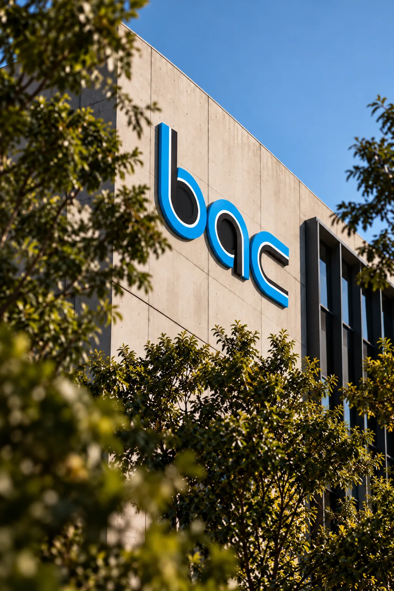
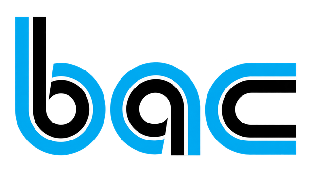

BorderReady
- Logistics
- Web App
- B2B
A customs document preparation system for clearing agents, designed to simplify and speed up border processes.
View Project Project details

About Aug 2026 001 My Journey
I’m Shane, a Botswana Accountancy College student studying Business Intelligence and Data Analytics. I enjoy working at the intersection of data, technology, research and real-world problem solving.
Learn MoreI’ve gained practical experience through debt collection, a legal internship and leadership roles. These experiences helped me develop communication, problem solving and professionalism.
View ExperienceReal projects, real impact. A mix of development, problem solving and collaboration.
A customs document preparation system for clearing agents, designed to simplify and speed up border processes.
A mobile ERP solution for SMEs to manage operations, inventory, finance and reporting on the go.

Reflections and professional communication from my academic journey.
Adapting to BAC, changing my study habits and learning from practice.
Read More : Academic Journey Reflection
Chairing a five-member CSS group through Tuckman’s five stages.
Read More : Group Work ReflectionA formal application for opportunities in analytics, reporting and business technology.
Read More : Industrial Attachment Application LetterA concise, reusable email to accompany my CV and application letter.
Read More : Professional Email TemplateWhat I have learned, where I applied it and the evidence behind it.
Excel helps me organise operational records, use formulas and reduce repetitive administration.
During my January–April 2026 internship in the Collections Department at Precious and Partners Legal Practice, I maintained customer and account records, recorded interactions, promises to pay and follow-ups, and updated KPI trackers. I worked with spreadsheet automation and activity logs.
I learned to check records carefully, keep information consistent and consider the next person relying on a tracker. No original workbook screenshot is available; client records are not published.
Read my résuméReporting turns operational data into information that colleagues can review and act on.
I prepared daily, weekly and monthly performance reports, monitored KPIs and assisted with dashboard development during the internship. Power BI formed part of my practical reporting experience.
This developed my attention to data quality and clear presentation. Dashboard work was collaborative support, not a claim that I built an entire debt-management platform. No performance uplift or client data is presented.
Explore my experienceI explore how digital products can support business workflows, from customs document preparation to mobile business administration.
BorderReady addresses document preparation for clearing agents. Ledisa ERP explores operations, inventory, finance and reporting for SMEs and is developed collaboratively with my brother. My involvement includes product thinking, design and development learning.
Working on these products has helped me translate practical needs into workflows and recognise the importance of testing, clear information and collaboration. The BorderReady screenshot is application evidence; the Ledisa phones remain an illustrative concept.
Explore the projectsSupporting skills: Leadership, research, communication, organisation and teamwork  developed through internship responsibilities, CSS group work and my 2025 role as Assistant Head Boy and SRC Executive.

Original résumé PDF. Referee title and email require confirmation; see the CV page.
Based in Gaborone, Botswana.